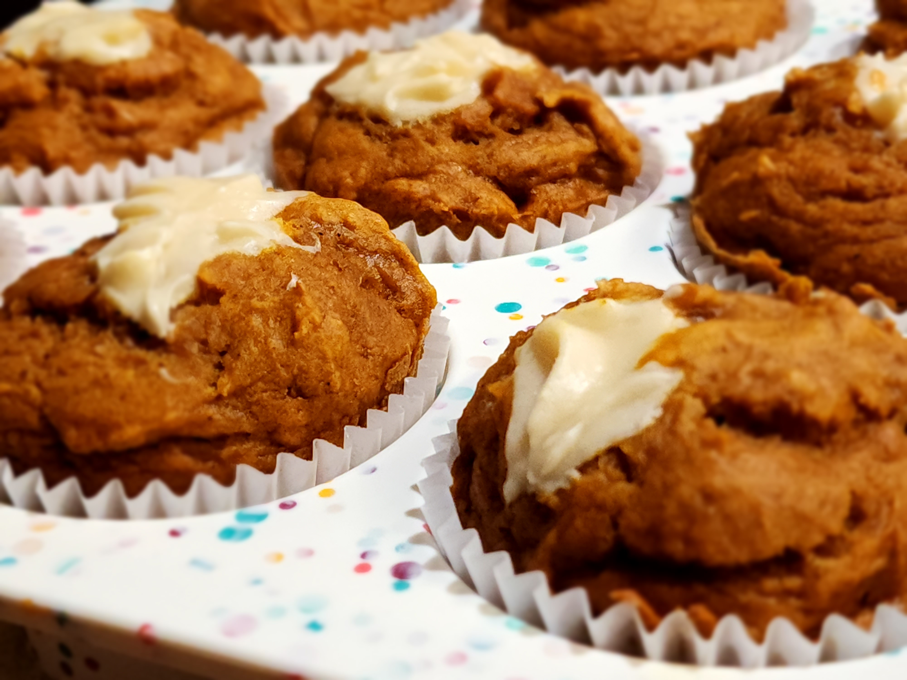

pumpkin muffins
ingredients
- (all-purpose) flour
- (granulated) sugar
- baking powder
- baking soda
- salt
- pumpkin spice
- pumpkin purée
-
butter
- butter can be salted or unsalted
- to soften, unwrap and let it sit at room temperature for ~30 minutes until it gets dented by lightly poking
- vanilla extract
- eggs
- cream cheese
- milk
equipment
- 2 small microwave-safe bowls
- large bowl
- medium bowl
- muffin tin
- piping bag/ziplock bag with one of its bottom corners cut off
- oven at 350°f
- wire rack
- cupcake wrappers
- big cool-looking plate
instructions
melt 1/4 cup butter in a small microwave-safe bowl
lightly beat 1 large egg into another small bowl
mix 1 1/2 cup (all-purpose) flour, 3/4 cup (granulated) sugar, 1 teaspoon baking powder, 1 teaspoon baking soda, 1/4 teaspoon salt, and 1 teaspoon pumpkin spice into a large bowl until combined
mix 1 1/2 cup pumpkin purée, the butter, ~2 teaspoon vanilla extract, and the egg into a medium bowl
make a crater in the middle of the large bowl and pour/spoon the contents of the medium bowl into the large bowl
mix the large bowl until just combined and there are no dry pockets
fill the 12-cup muffin pan evenly
clean the medium bowl
using a hand mixer on medium speed, mix 4 ounce softened cream cheese, ~1 teaspoon vanilla extract, 1 teaspoon (all-purpose) flour, 2 tablespoon 2 teaspoon (granulated) sugar, and 1 tsp milk into the medium bowl until smooth
preheat the oven to 350°f
put mixture into piping bag/ziplock bag with one of its bottom corners cut off
evenly fill the insides of each muffin with the cream (squeeze for ~1 second)
evenly top each muffin with the cream
bake for ~18 minutes or until a toothpick stabbed into the bread comes out mostly clean
let them cool in the tin for 10+ minutes
transfer to wire rack to cool completely (time varies)
fit each muffin with a cupcake wrapper
transfer to a cool-looking plate big enough to hold the pumpkin muffins

u can't miss out if ur baking it urself (coping)